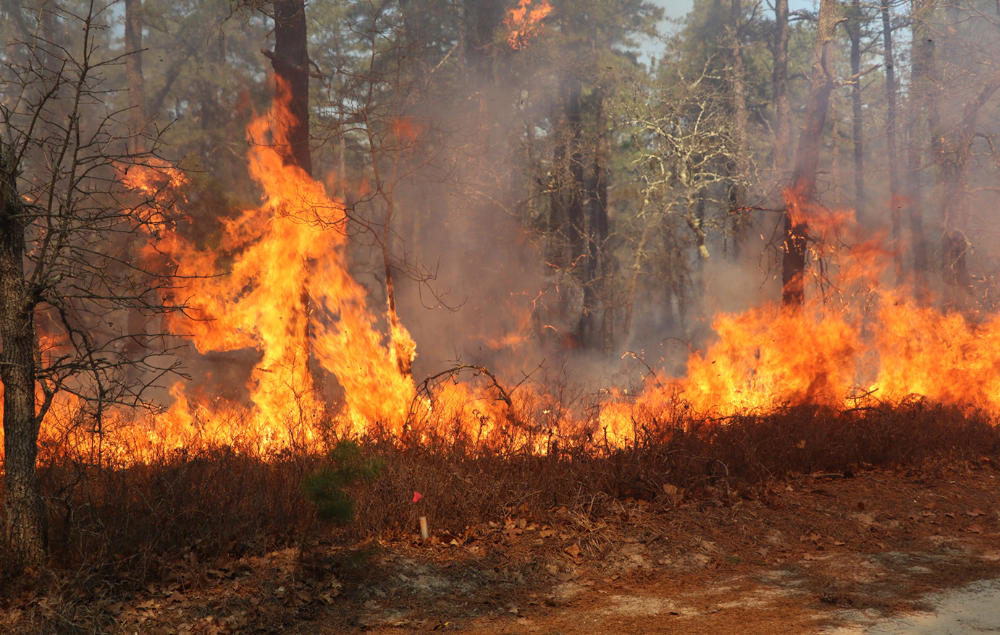

vile vipepeo, ndege, tembo, nyoka, nyani, simba na chui. Uchomaji misitu huharibu makazi yao na kusababisha kupungua au kutoweka kwa baadhi ya viumbe hao. Aina nyingi za viumbe hutegemea misitu kwa chakula, makazi, na kuzaliana. Vilevile, misitu husaidia kuzuia mmomonyoko wa udongo na kuhifadhi unyevunyevu ardhini. Uchomaji wa misitu unaharibu tabaka la juu la udongo na huweza kusababisha mmomonyoko wa udongo. Pia, uchomaji wa misitu husababisha kupoteza unyevunyevu na rutuba kwenye udongo. Aidha, uchomaji wa misitu huzalisha hewaukaa ambayo husababisha ongezeko la joto duniani. Kielelezo namba 6 kinaonesha uharibifu wa misitu kutokana na uchomaji moto.
